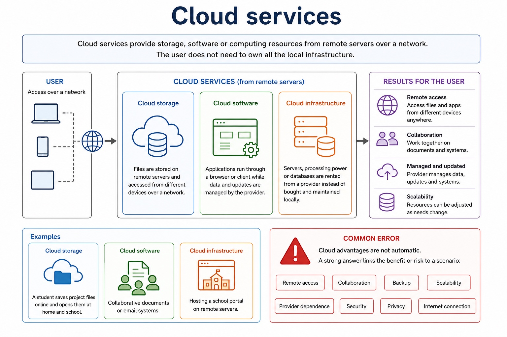
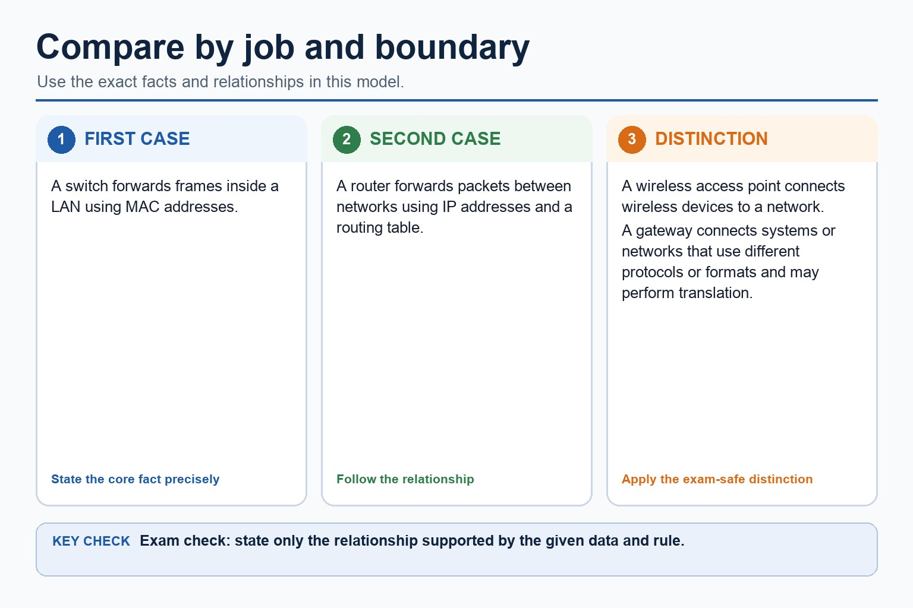
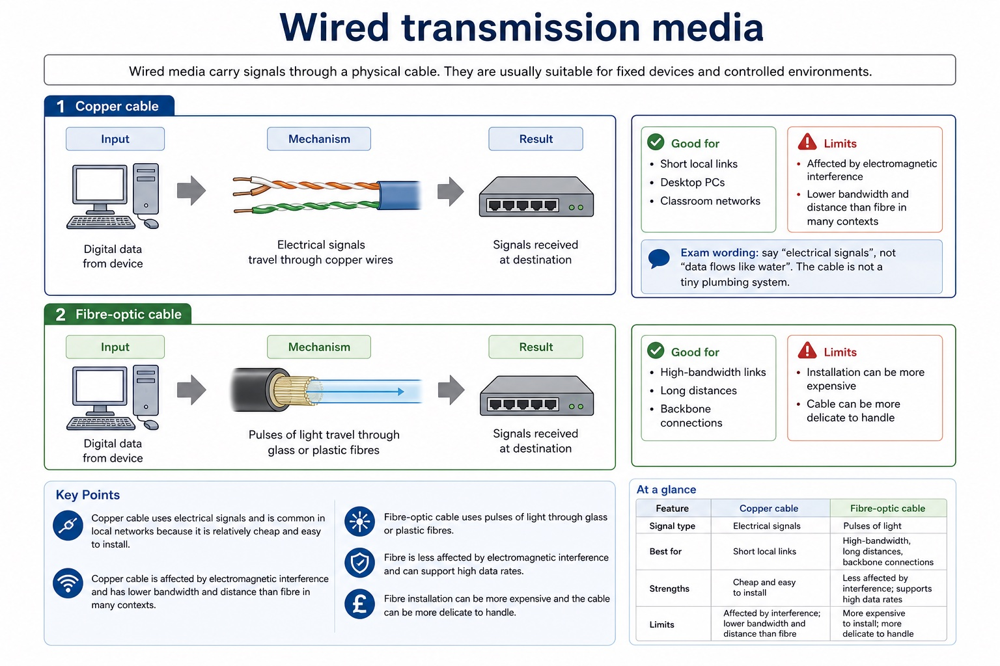

Quick route
Use the diagnostic, learning objectives, first worked example and foundation question. Stop once the learner can explain the central distinction accurately.
Cambridge AS9618 | Paper 1 | Section 2: Communication
Flexible-depth lesson
S2.06, S2.07, S2.08 | Visual relationships, mechanisms and worked examples.
Part 1 | optional depth
Recall the main conclusion from Lesson 008: Network topologies and packet transmission.
Give one accurate definition or method step before continuing. If it is missing, revisit only that prerequisite.
Part 2 | explicit teaching
Complete the default-visible explanation and worked example before using the visual recap.
S2.06 · comparison
A public cloud may scale quickly and reduce local hardware management: these are possible benefits. A private cloud is dedicated to one organisation and can give greater control over access and configuration. Each benefit or drawback must link availability, control, cost or security to the stated scenario.
Cloud computing provides storage, processing or software as a service using remote shared infrastructure reached through a network. A public cloud is offered over shared provider infrastructure; a private cloud is restricted to one organisation.
A private cloud is dedicated to one organisation and can give greater control over access and configuration.
Public and private cloud computing, including the benefits and drawbacks of cloud computing.
A private cloud is restricted to one organisation.
A public cloud may scale quickly and reduce local hardware management: these are possible benefits.
A private cloud is dedicated to one organisation and can give greater control over access and configuration.
Each benefit or drawback must link availability, control, cost or security to the stated scenario.
A public cloud may scale quickly and reduce local hardware management: these are possible benefits.
A private cloud is dedicated to one organisation and can give greater control over access and configuration.
Each benefit or drawback must link availability, control, cost or security to the stated scenario.
Choose a cloud model / Connect a school campus and a remote weather station: A school storing non-sensitive public resources may use a public cloud for scalable access. A hospital may choose a private cloud for tighter organisational control of patient-data access.
Show the following targets in one connected answer, using a concrete example for each: public cloud; private cloud; benefit; drawback; dedicated to one organisation.
Use these cards and diagrams to reinforce the explanation above; they are not a substitute for it.
A public cloud may scale quickly and reduce local hardware management: these are possible benefits.
A private cloud is dedicated to one organisation and can give greater control over access and configuration.
Each benefit or drawback must link availability, control, cost or security to the stated scenario.
Diagram · 1 of 1

Show understanding of public and private cloud computing, including the benefits and drawbacks of cloud computing.
Public refers to shared provider infrastructure, not unrestricted access to customer data. Private infrastructure is dedicated to one organisation but is not automatically secure.
S2.07 · decision
A wired network carries signals through a physical cable. It can provide stable, predictable links and avoids radio interference, but installation restricts movement and may require disruptive cabling. A wireless network transmits through the air, supporting mobility and rapid installation, but shared radio capacity, interference, obstacles and interception risk can affect performance and security. The implications must be tied to a given use, not reduced to 'wired is faster'.
Radio waves, including WiFi, support non-line-of-sight local wireless access but can be absorbed, reflected or interfered with. Terrestrial microwave links provide directional point-to-point communication and usually require clear line of sight. Satellite communication uses microwave/radio links to and from a satellite for wide or remote coverage, but long propagation distance can increase latency and weather can affect some links.
A wired network carries signals through a physical cable.
The differences between wired and wireless networks and the implications of using each.
A wired network carries signals through a physical cable.
It can provide stable, predictable links and avoids radio interference, but installation restricts movement and may require disruptive cabling.
A wireless network transmits through the air, supporting mobility and rapid installation, but shared radio capacity, interference, obstacles and interception risk can affect performance and security.
A wired network carries signals through a physical cable.
It can provide stable, predictable links and avoids radio interference, but installation restricts movement and may require disruptive cabling.
A wireless network transmits through the air, supporting mobility and rapid installation, but shared radio capacity, interference, obstacles and interception risk can affect performance and security.
Use copper for short fixed desktop links, fibre-optic cable between buildings requiring high bandwidth, WiFi radio waves for mobile tablets, a line-of-sight microwave link where cabling between two buildings is impractical, and satellite for the remote station without local cable infrastructure.
Show the following targets in one connected answer, using a concrete example for each: wired network; wireless network; physical cable; radio; implications.
Use these cards and diagrams to reinforce the explanation above; they are not a substitute for it.
A wired network carries signals through a physical cable.
It can provide stable, predictable links and avoids radio interference, but installation restricts movement and may require disruptive cabling.
A wireless network transmits through the air, supporting mobility and rapid installation, but shared radio capacity, interference, obstacles and interception risk can affect performance and security.
Comparison · 1 of 1

Show understanding of the differences between wired and wireless networks and the implications of using each.
Comparisons must connect physical cable or radio transmission to mobility, installation, interference, shared capacity, reliability or security in a stated use.
S2.08 · process
Copper cable carries electrical signals and is often economical for short LAN links, but suffers attenuation and electromagnetic interference. Fibre-optic cable carries pulses of light, supports high bandwidth and long distances and is resistant to electromagnetic interference, but equipment and installation may cost more.
Radio waves, including WiFi, support non-line-of-sight local wireless access but can be absorbed, reflected or interfered with. Terrestrial microwave links provide directional point-to-point communication and usually require clear line of sight. Satellite communication uses microwave/radio links to and from a satellite for wide or remote coverage, but long propagation distance can increase latency and weather can affect some links.
Wired media carry signals through a physical cable. They are usually suitable for fixed devices and controlled environments. Copper cable
Radio waves, including WiFi, support non-line-of-sight local wireless access but can be absorbed, reflected or interfered with.
Radio waves are used by technologies such as WiFi to transmit data without a physical cable.
Copper cable, fibre-optic cable, radio waves including WiFi, microwave and satellite transmission.
Copper cable carries electrical signals and is often economical for short LAN links, but suffers attenuation and electromagnetic interference.
Fibre-optic cable carries pulses of light, supports high bandwidth and long distances and is resistant to electromagnetic interference, but equipment and installation may cost more.
Radio waves, including WiFi, support non-line-of-sight local wireless access but can be absorbed, reflected or interfered with.
Copper cable carries electrical signals and is often economical for short LAN links, but suffers attenuation and electromagnetic interference.
Fibre-optic cable carries pulses of light, supports high bandwidth and long distances and is resistant to electromagnetic interference, but equipment and installation may cost more.
Radio waves, including WiFi, support non-line-of-sight local wireless access but can be absorbed, reflected or interfered with.
Use copper for short fixed desktop links, fibre-optic cable between buildings requiring high bandwidth, WiFi radio waves for mobile tablets, a line-of-sight microwave link where cabling between two buildings is impractical, and satellite for the remote station without local cable infrastructure.
Describe the following targets in one connected answer, using a concrete example for each: copper cable; fibre-optic cable; radio waves; WiFi; microwave; satellite.
Use these cards and diagrams to reinforce the explanation above; they are not a substitute for it.
Copper cable carries electrical signals and is often economical for short LAN links, but suffers attenuation and electromagnetic interference.
Fibre-optic cable carries pulses of light, supports high bandwidth and long distances and is resistant to electromagnetic interference, but equipment and installation may cost more.
Radio waves, including WiFi, support non-line-of-sight local wireless access but can be absorbed, reflected or interfered with.
Diagram · 1 of 2

Diagram · 2 of 2

Describe copper cable, fibre-optic cable, radio waves including WiFi, microwave and satellite transmission.
All named media are required. Explanations must include the signalling method or propagation condition and a use/limitation, not only relative speed.
Part 3 | select by learner need
Question 1. Compare public and private cloud for a medical organisation. Suggest transmission media for fixed classroom PCs, mobile tablets, an inter-building backbone and a remote field station.
Answer: public cloud characteristic; private cloud characteristic; scenario-linked comparison; justified choice; copper cable for short fixed links with a valid cost/stability reason; WiFi/radio waves for mobile devices with an interference/security implication; fibre-optic cable for the high-bandwidth/longer inter-building link; satellite for remote coverage without cable infrastructure; at least one limitation is correctly linked to the chosen medium
Marking guidance: Do not equate cloud computing with the internet itself. Do not accept unqualified 'wireless is less secure' or 'fibre is faster'; require a mechanism or scenario consequence.
Common error: For the command word compare, perform that exact action; do not replace it with an unrelated fact.
Question 2. State one cloud-computing service.
Answer: Remote storage, processing or hosted software.
Marking guidance: Award one mark for each distinct, technically accurate point or method step.
Common error: Do not repeat the same point in different words; each mark needs a separate idea or method step.
Question 3. Compare public from private cloud.
Answer: Public cloud uses shared provider infrastructure; private cloud is dedicated or restricted to one organisation.
Marking guidance: Award one mark for each distinct, technically accurate point or method step.
Common error: Do not copy the worked example unchanged; transfer the method and check it against the new context.
| Reference | Marks | Command word | Question type |
|---|---|---|---|
| 9618/12/W/25 Q8(i) | 4 | explain | calculate |
| 9618/13/W/25 Q4(a) | 3 | give | recall |
| 9618/13/W/25 Q4(c) | 3 | complete | recall |
| 9618/12/W/25 Q8(a)(i) | 2 | give | recall |
Index only: Cambridge question and mark-scheme wording is not reproduced on this public course page.
Part 4 | close when ready
Students often confuse bandwidth with speed in every sense. Correction: bandwidth is capacity; latency and congestion also affect perceived performance.